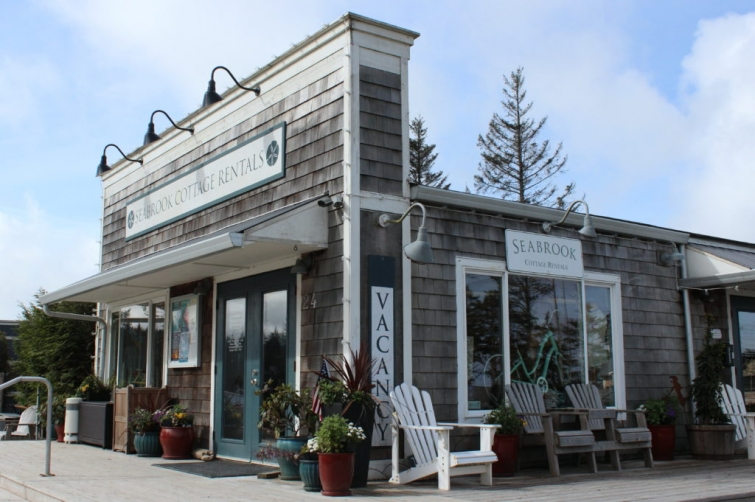
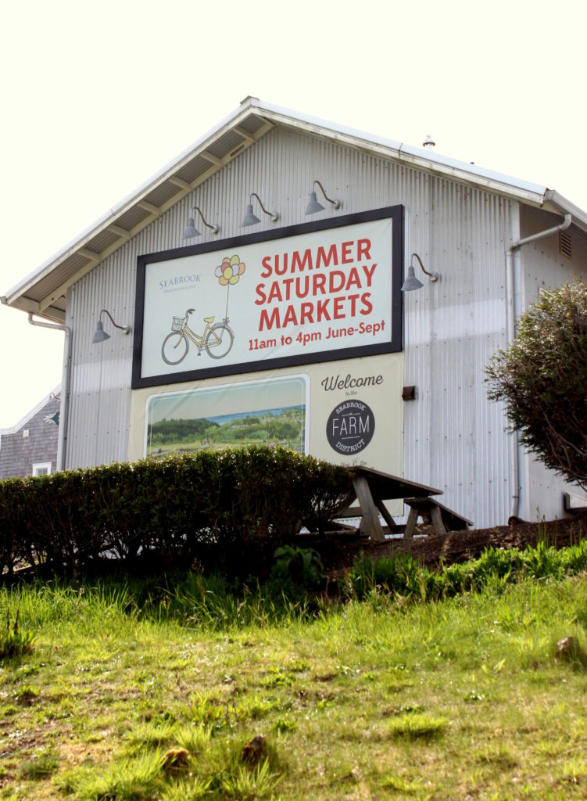
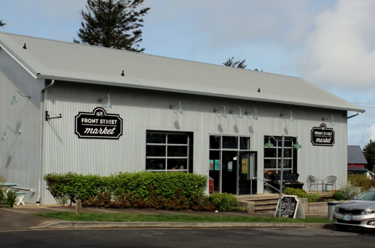

.png)
.PNG)
.PNG)
.PNG)
.PNG)
.PNG)
.JPG)
.JPG)
.PNG)
.PNG)


Back to Seabrook, Washington again today, but this time we are taking a peek at the super cute shops that are popping up there. Â As you enter the beach town from the main road, you first pass this sign on the side of the town’s market. Â I really wish we could have been there for a Saturday market.
We pulled into the first road to the right and parked in front of Front Street Market.
It is a small grocery store with much much more. Â Besides all your “normal” grocery items, Front Street Market has a tiny coffee shop area that serves Stumptown coffee; you can order freshly made sandwiches and salads to go, and they offer homemade ice cream sandwiches in the summer. Â Yum!

A few steps down the street is Seabrook Cottage Rentals – the agency where you can choose from over a hundred charming cottages for your stay there, and they also offer many items to purchase with the Seabrook logo…from tee shirts to rain jackets to sweatshirts.
Besides renting a cottage in Seabrook, you can also rent a bicycle at Buck’s Bikes.
On Front Street you will find Imagine That – a studio for painting your own pottery.
At the end of that section of the street is an Airstream that houses Crafty Christine’s creative little shop of unusual jewelry and accessories.
Now let’s go across the street to the shops over there.
I believe the one on the far end is Seabrook Kids.
(I only photographed it through the door from some reason.)
 Next to it is The Stowaway, a fun wine and cheese shop.
The Seabrook Real Estate office is located up the street from The Stowaway. Â I wish I had taken a photo of the interior of the real estate office because it really was a beautiful space with lovely millwork.
At the end of the street, across from Front Street Market is Mill 109 – a restaurant and pub that serves breakfast, lunch, and dinner. Â You can check out their menus here.
a look inside…
Now let’s go over to the next block.  One of the shops there is Sweet Life offering candy and ice cream – what could be better while you are at the beach, right? 🙂
Unfortunately they were closed when we were there, but aren’t their planters out front precious?!
Across from the brick building that houses Sweet Life is a wooden building with two absolutely wonderful shops – Red Velvet Bakery and Seaworthy.
Here’s a look inside Red Velvet Bakery.source
And now to my favorite shop in Seabrook… Seaworthy, a home goods store (of course 🙂 ) with a great assortment of accessories that I had a hard time resisting!
I took a lot of photographs in there.
Enjoy looking around. 🙂
Those little striped rugs and that throw pillow were calling my name, but I managed to leave them there for someone else to take home and love.
Wouldn’t you like to shop at Seaworthy? 🙂
There were a couple of other retail places that I did not photograph – a pizza restaurant called Frontager’s Pizza that is supposed to be really good and Salty Dog, a dog accessories shop with any and everything you could  possibly want for your dog.  There is also a fitness center, a Montessori school, and ….
Seabrook’s Town Hall.
It is a great place for a wedding if you happen to be lucky enough to get married while in Seabrook. 🙂 Your ceremony can be inside City Hall with it used as a chapel with your reception outside on the lawn, or do the ceremony outside on the lawn, (with fingers crossed for good weather!) and have your reception inside the building. You can check out the event slideshow on their site here, and below is a super sweet video from a wedding their last August.
 from Articulate Film Co. on Vimeo.
Wasn’t that sweet?!
And now to finish up this post…We have seen the outside of many homes in Seabrook, inside the idea houses there, and today we have looked at their commercial area.  For our final post (I think 😉 ) we will tour a few of the rental cottages’ interiors.  (Most of them are more traditional in style than the idea houses.)  Soooo…I hope to see you back here for that soon!  Enjoy the rest of your weekend. 🙂
Until next time…


.PNG)
I think I might have told you this before but you take wonderful photos. You also know how to tell a story with them. I love these shops and the wedding venue is beautiful and frankly made me a little teary eyed. Why do I get teary eyed even watching a wedding of people I don’t know. lol
Great post,
DiAnne
——————————————————————–
Thank you (again 🙂 ) DiAnne! I do the same thing and get all teary eyed at weddings – yes even of strangers. We just have big hearts! (At least that is my excuse.)
Thank you for reading and taking the time to comment on the post.
Have a fun Friday!
Kelly
That is the most adorable community so of course the shops had to be fabulous too!! What fun to browse through. 🙂 Such cute names too. I think I would have a weakness for seaworthy. 🙂 Haha, and all of the shops with sweets!! 😀 Looking forward to the interiors.
———————————————————————–
It is! It could have been more fun, if I had had longer….with 2 guys I felt guilty taking any time on this trip to peruse the town. But I knew we would not be back for a very long time. Needs to be a girls’ trip!
Kelly
I have not commented before, but have really enjoyed these posts and your descriptions. I am glad you got to go. I most certainly would shop at Seaworthy by the way. That is my kind of place! 🙂
———————————————————————-
Thank you so much for taking the time to comment Karen, and I’m so happy you are enjoying the travel posts. They are certainly different from my normal home decorating and entertaining posts, so I realize that many of my readers don’t like these as much. But the blog is also my scrapbook so to speak, and I really want to be able to remember these fun trips. Plus I hope it will give readers ideas of places to visit for themselves.
Seaworthy was such a fun little shop! Have a fun Friday and a great weekend!
Kelly
That was fun! You just go from one fun thing to the next! Front Street Market made me think of the campground store at the beach where I camped with my family as a child and then…there was one of our later campers, the Airstream! Seaworthy makes me think of The Shops at Tweaked at Murrells Inlet, South Carolina. You would like that shop. And, then, you end with a wedding video! You know how to make my day! I hope you can add Gaspirilla Inn and Bocca Grande, Florida to your list of places to visit. I would love to see your photos of the inn, restaurants, and shops in that area.
——————————————————————-
Glad you liked it Kathy! We do seem to be on the go quite a bit this summer. How lucky you were to camp in an Airstream! Gosh I would love that! We definitely need to make some Florida trips, and I want to check out that inn. Thank you for the recommendation!
Kelly
Happy Sunday to you!! I enjoyed looking at the shops and especially seeing the planters and loved the bunny in the tub of flowers. Wondering when you will be out visiting your daughter? My youngest is in Paris, flying there over night. They are staying at DisneyParis and late this week taking the Chunnel to London and next Sunday leaving on a week cruise from S. Hampton to NYC following the route of the Titanic with 3 Balls planned. I’m so happy for them but as a parent always concerned about traveling in this day and age. Glad you are getting to travel about now in your retirement. My next trip is Elizabeth Pointe and then to Destin. You DO know those lovely places, right?!😉 Happy Trails to You!
——————————————————————
We returned last weekend from Oklahoma. It was a looong drive but so good to see our daughter. 🙂 Your trip sounds fabulous, but I am afraid your daughter’s trips beat us all – by a long shot!! Wow! Paris, DisneyParis, London, NYC, and the route of the Titanic! There aren’t enough exclamation marks for all of that. LOL
Thank you for following along on our adventures Louvina. I hope you have a great time on your next trip!
Kelly